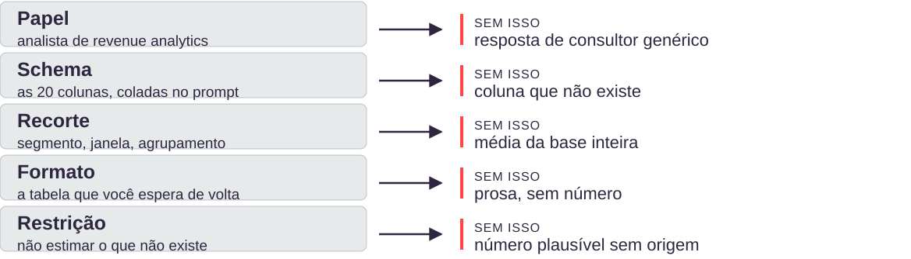
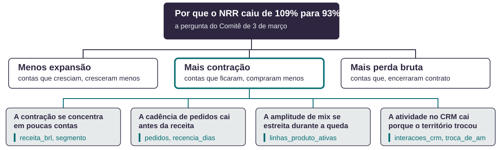
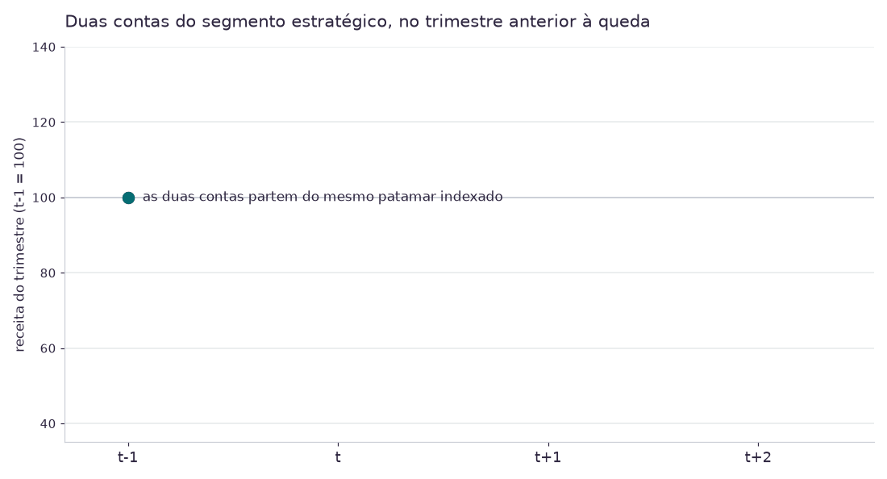
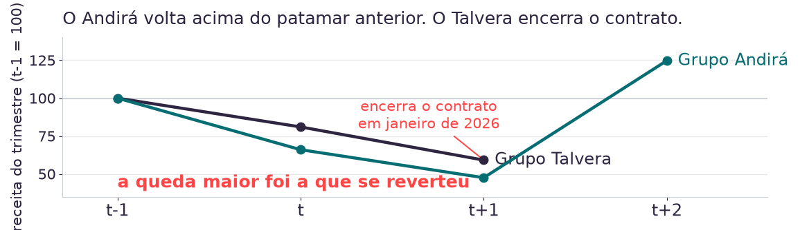
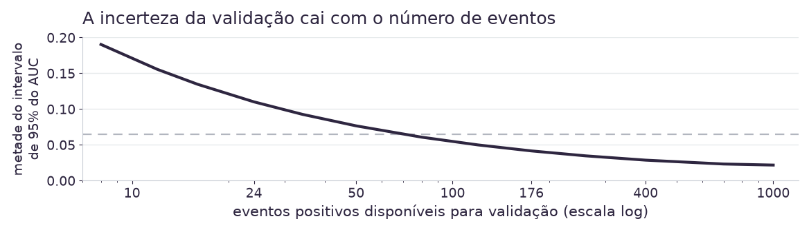
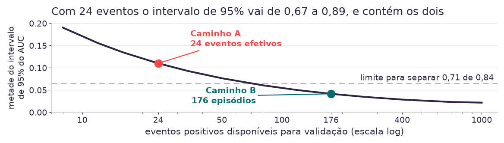

14h00 · 30 min
Regra de evidência
O que separa a IA que descreve o dado da que escreve o código que o mede.
14h30 · 55 min
Especificação de prompt
Quatro níveis sobre a mesma pergunta de negócio, e o que falha em cada ausência.
15h45 · 45 min
Teste falseável
Variável, operação, janela e critério de refutação. O caderno de hipóteses do grupo.
16h30 · 60 min
Definição do alvo
O rótulo do Caminho A construído e contado sobre o painel.
Intervalo das 15h25 às 15h45. O caderno de hipóteses é a entrega de hoje.
16.618
linhas no painel de contas
20
colunas disponíveis
0
colunas de risco, propensão ou churn
3h30
até o fechamento
Produzido pela manhã
Backlog de hipóteses e posição preliminar sobre Caminho A ou B.
Ausente no dado
Nenhuma coluna de risco. Sem custo, nenhuma margem derivável.
Exigido até 17h30
Cada hipótese com número, célula de origem e veredito.
A hipótese formulada em linguagem de negócio precisa virar coluna, operação e corte antes de qualquer código.
Fonte: painel analítico de contas, Exhibit 3 do Caderno Kovan PL-02-2026 v2.
| Dimensão | Descrever o dado | Escrever o código que mede |
|---|---|---|
| Origem do número | amostra do arquivo, completada por plausibilidade | execução sobre as 16.618 linhas |
| O que volta | um valor | um valor e o código que o produziu |
| Rastreabilidade | nenhuma | célula reexecutável |
| Modo de falha | número plausível para coluna inexistente | erro de lógica visível no código |
As duas respondem em segundos. Só uma pode ser contestada por quem recebe o número.
Tokenização linear
A tabela entra como sequência de texto. A relação entre linha e coluna não sobrevive à serialização.
O erro cresce com o número de colunas
Janela de contexto
16.618 linhas não cabem no contexto. O modelo lê uma amostra e responde sobre o arquivo inteiro.
A resposta não distingue o que ele leu do que completou
Cálculo implícito
Somar dezesseis mil valores por previsão do próximo token não é uma operação aritmética.
A saída tem a forma de um cálculo e não passou por um
Nenhum dos três se resolve com um modelo maior. A saída é separar leitura de computação.
Fontes: The Structural Challenge, 2026; TaCube, EMNLP 2022.
82,4%
melhor modelo em planilhas financeiras, cerca de 1 erro a cada 6 perguntas
48,6%
média de todos os modelos na maior planilha do benchmark
29%
acerto exato pedindo a resposta direto ao modelo
58%
acerto exato pedindo que ele gere e execute o código
Os dois primeiros
A queda acompanha o tamanho da planilha e é consistente entre dez configurações de três fornecedores. É limite de arquitetura, não fraqueza de um modelo.
Os dois últimos
A mesma pergunta, ao mesmo modelo, dobra de acerto quando muda de pedir o número para pedir o código. Sem os erros de escala, chega a 80%.
Dobrar o acerto não exigiu trocar de modelo. Exigiu trocar o que se pede a ele.
Fontes: FinSheet-Bench, arXiv 2026 (24 arquivos, 10 configurações de modelo); Pándy, Lakatos e Hajdu, IEEE INES 2025.
As duas primeiras fases não são preâmbulo do projeto: são 23% da janela que a Kovan tem para entregar o modelo.
Fonte: cronograma do projeto Kovan, 26 semanas, Exhibit 5. CRISP-DM conforme Wirth e Hipp (2000).
1. Pergunta
Decidir o que medir e sobre qual recorte.
Permanece com o analista
2. Recorte e medida
Escrever o código e executá-lo sobre a base inteira.
Transferido à ferramenta
3. Refutação
Decidir se o número derruba a hipótese.
Permanece com o analista
Pergunta mal formulada agora é respondida rápido e errado, e chega com a mesma aparência de uma resposta boa.
Decidir o que medir e decidir se o número derruba a hipótese não são delegáveis.
20
minutos
- Formato
- Individual, no notebook da aula
- Entrega
- O número que a IA devolveu e a coluna de origem dele, ou a constatação de que ela não existe
- Checkpoint
- Aos 12 minutos, colheita em voz alta
Abra o notebook no Colab e rode a célula que carrega o painel.
1.187 contas por 14 trimestres.
Peça uma análise sem nenhuma estrutura.
analise este arquivo e diga o que há de interessante
Agora peça um número que o painel não tem.
qual a margem média por conta no segmento estratégico?
Se recebeu um número, encontre a coluna de onde ele saiu.
Se não encontrar, anote isso: é o resultado da prática.
Você consegue apontar a célula que produziu o número, ou provar que ela não existe.
Você pediu a margem média por conta e recebeu R$ 412 mil. O que aconteceu?
- Você pediu
- margem média por conta
- Você recebeu
- R$ 412 mil
- O painel tem
- 20 colunas, nenhuma de custo nem de margem
Nível 0
Sem estrutura. Pedido em linguagem natural, sem recorte.
Volta: resumo de colunas e três observações genéricas
Nível 1
CREATE: papel, pedido, exemplos, ajustes, formato e extras.
Volta: prosa estruturada, ainda sem recorte
Nível 2
Estrutura na entrada e na saída: colunas, recorte e formato da tabela.
Volta: código pandas, faixas de variação por conta
Nível 3
Postura adversarial: o que refutaria o achado.
Volta: o código e as explicações que o derrubam
O nível 2 é o piso para qualquer pedido que precise produzir um número.
Nível 0
analise este arquivo e diga
o que há de interessanteVolta um resumo de colunas e três observações genéricas. Descrição não é análise.
Nível 2
Você é analista de revenue
analytics da Kovan LATAM.
Use o DataFrame `painel`, colunas:
conta_id, trimestre, segmento,
receita_brl, status_conta.
Devolva o código pandas que compara
2025 contra 2024 no segmento
estratégico, por conta, em faixas
de variação.
Se faltar informação, diga que
falta. Não estime.O recorte que produz o número foi decisão sua, e está escrito onde qualquer um pode discordar dele.

Nenhuma dessas falhas chega com cara de erro. Todas chegam com cara de resposta boa.
01 Schema
Use apenas colunas que existem no DataFrame `painel`.
Bloqueia: coluna que não existe.
02 Restrição
Se faltar informação para responder, diga que falta, em vez de estimar.
Bloqueia: número plausível sem origem.
03 Formato
Devolva o código, não o resultado.
Bloqueia: resultado sem célula que o produza.
As três cláusulas entram em todo prompt de análise a partir de agora.
20
minutos
- Formato
- Em duplas, uma tela por dupla
- Entrega
- Um recorte numérico e três explicações alternativas, cada uma com a coluna que a testaria
- Checkpoint
- Aos 14 minutos, comparar o recorte com a mesa ao lado
Escreva o prompt de nível 2 para a pergunta do bloco.
A queda de receita do segmento estratégico está concentrada ou é uniforme?
Peça o código, não o número. Rode no notebook.
O número sai da execução.
Suba para o nível 3.
liste três explicações alternativas para este padrão e a coluna que testaria cada uma
Compare o seu recorte com o da mesa ao lado.
Se os números divergirem, o que mudou não foi o dado.
O recorte está escrito no prompt, e o número saiu de uma célula que você rodou.
Variável
Qual coluna do painel carrega o sinal.
receita_brl, linhas_produto_ativas
Operação
O que se calcula sobre ela, e sobre quais grupos.
mediana por segmento, dois grupos
Janela
Quais trimestres entram, e por que os outros ficam de fora.
2023Q2 a 2025Q4, onze trimestres
Critério de refutação: qual resultado derruba a hipótese, escrito antes de rodar. Sem esta linha, a análise vira busca por confirmação.

Cada folha nasce de um ramo do indicador e nomeia a coluna que a testa.
Fonte: decomposição do NRR do segmento estratégico, Exhibit 2 do Caderno Kovan.
Rentabilidade
Não há custo nem margem. Nenhuma hipótese sobre lucro por conta é testável.
coluna ausente: custo, margem
Engajamento completo
Visitas e interações existem para parte da base, e a cobertura não é uniforme entre segmentos.
cobertura parcial: visitas_registradas
Efeito da intervenção
Não há registro de quem recebeu plano de intervenção.
coluna ausente: plano_intervencao
Insuficiente é um veredito legítimo e vai aparecer no caderno. Dizer que o dado não responde é resultado; inventar que responde é o que a Kovan já fez uma vez, com o Radar de Contas.
| Mecanismo | Onde aparece no painel | O que fazer |
|---|---|---|
| Completamente ao acaso | receita não registrada por atraso no fechamento contábil, cerca de 1% dos trimestres | excluir a linha não enviesa, só perde potência |
| Ao acaso, dado o observado | engajamento comercial ausente, e a cobertura é pior nas contas menores | corrigível condicionando ao segmento, que está na base |
| Não ao acaso | contas que compram por portal de procurement registram menos atividade comercial | não corrigível com o que existe na base |
Taxonomia de Rubin. Tratar os três casos da mesma forma foi a decisão que separou a contagem das mesas.
Fonte: advertências de qualidade do Exhibit 3. Taxonomia conforme Rubin, Inference and missing data, Biometrika, 1976.
30
minutos
- Formato
- Em grupo, um caderno por grupo
- Entrega
- Três hipóteses com as seis linhas preenchidas e veredito
- Checkpoint
- Aos 20 minutos, checar se algum veredito é Insuficiente
Pegue três hipóteses do backlog que o grupo escreveu de manhã.
Preencha as seis linhas do registro para cada uma.
hipótese · variável · operação · janela · critério de refutação · veredito
Em pelo menos uma, peça à IA que derrube o seu próprio achado.
Antes de fechar o veredito, não depois.
Exporte o caderno.
Entrega de hoje e matéria-prima do Artefato 1.
As três hipóteses têm critério de refutação escrito antes de rodar, e ao menos um veredito não é Confirmada.
Qual destas hipóteses pode ser testada sobre o painel e pode perder?
- O painel oferece
- 20 colunas, 14 trimestres
- As hipóteses
- vieram do backlog que os grupos escreveram de manhã
- A janela
- 14 trimestres, de 2022Q3 a 2025Q4
Caminho A · Sinal de ruptura
Binário e verificável, derivável hoje à tarde.
pedidos == 0 em 2 trimestres consecutivos
A regra sai pronta do ERP. Não há o que negociar.
Caminho B · Erosão silenciosa
Contínuo e construído. Alguém precisa decidir o que conta como contração relevante.
contração relevante = ?
queda de 10% em 2 trimestres
queda de 15% em 2 trimestres
queda de 25% em 2 trimestres
Cada corte constrói um modelo diferente.
Trocar o limiar do Caminho B muda a população-alvo antes do primeiro treinamento. A escolha do rótulo é decisão de negócio, não de modelagem.
| Critério | A pergunta que ele faz | Caminho A · ruptura | Caminho B · erosão |
|---|---|---|---|
| Observabilidade | o rótulo existe no sistema? | existe | precisa ser construído |
| Prevalência | há eventos suficientes para treinar? | 34 eventos, 24 efetivos | 176 episódios |
| Antecedência | o sinal acende a tempo de agir? | depois da decisão do cliente | com o relacionamento aberto |
| Acionabilidade | a fila cabe na capacidade? | 6 a 10 por trimestre | 120 a 190, teto de 138 |
| Verificabilidade | dá para auditar se acertou? | direta | depende do limiar escolhido |
A decisão não é qual caminho é melhor, é qual critério a Kovan aceita perder.
Fonte: Exhibits 2 a 5, Caderno Kovan PL-02-2026 v2. Os cinco critérios são construção deste módulo, não framework publicado.


As duas caíram e a que caiu mais foi a que voltou. Se a magnitude não separa, o que separa? É o conteúdo da Aula 03.
Fonte: painel analítico de contas, séries indexadas ao trimestre anterior ao episódio.


Ao fim de 26 semanas e R$ 1,842 milhão, a Kovan não saberia se o modelo funciona.
Fontes: Hanley e McNeil, Radiology, 1982. Minus et al., Journal of Clinical Epidemiology, 2025: o viés do AUC é dirigido pelo número de eventos, não pela taxa.
30
minutos
- Formato
- Em duplas na mesma mesa
- Entrega
- O número de rupturas do segmento estratégico, com o critério declarado
- Checkpoint
- Aos 20 minutos, comparar com a mesa ao lado
Peça o rótulo à IA e leia o código que ela gerou.
crie uma coluna de churn neste dataset
Identifique o critério que ela escolheu.
Ela avisou que estava escolhendo?
Construa o rótulo do Caminho A e conte as rupturas.
Zero pedidos faturados em dois trimestres consecutivos, segmento estratégico.
Compare o número com a mesa ao lado.
Se der diferente, o problema é de decisão, não de código.
O número tem um critério declarado ao lado, e a divergência com a mesa vizinha está localizada.
Duas mesas contaram rupturas com o mesmo critério e chegaram a números diferentes. Qual a explicação mais provável?
- As duas mesas
- rodaram o mesmo critério sobre o mesmo arquivo
- O painel tem
- 14 trimestres e 20 colunas
- A diferença
- está numa decisão de tratamento, não no código
08/08 · hoje
Fica pronto
Caderno de hipóteses com veredito, painel carregado e conferido, e a contagem de rupturas do Caminho A.
15/08 · manhã
Continua com o Rafael
A discussão de alvo volta pelo lado de negócio, com a recomendação que o Comitê precisa assinar.
15/08 · tarde
Trata o dado
As quatro advertências de qualidade do painel. Foi uma delas que separou a contagem das mesas hoje.
Semana 5 · 05/09
Artefato 1
Análise Exploratória de Dados, com a segmentação que a trilha de Negócios entrega no mesmo marco.
A divergência de contagem de hoje não é erro de ninguém: é o insumo da aula de qualidade de dado em 15/08.
Caso e dados
1. Kovan Technologies LATAM: A Definição do Alvo. Business case PL-02-2026, versão v2, e Caderno de Exhibits 1 a 5.
Método
2. Wirth e Hipp. CRISP-DM, 2000. 3. Tukey. Exploratory Data Analysis, 1977.
4. Conn e Sarrazin. Issue Tree e MECE, McKinsey, 2019. 5. Courtney, Kirkland e Viguerie. Strategy Under Uncertainty, HBR, 1997.
Continuidade no programa
6. Donaire, R. Inteligência de Mercado e Modelagem Preditiva. Aula 01, manhã, 08/08/2026. Estrutura CREATE e vieses do HIPPO.
O ciclo de EDA assistida e os cinco critérios de escolha de alvo são construção deste módulo, não framework publicado.